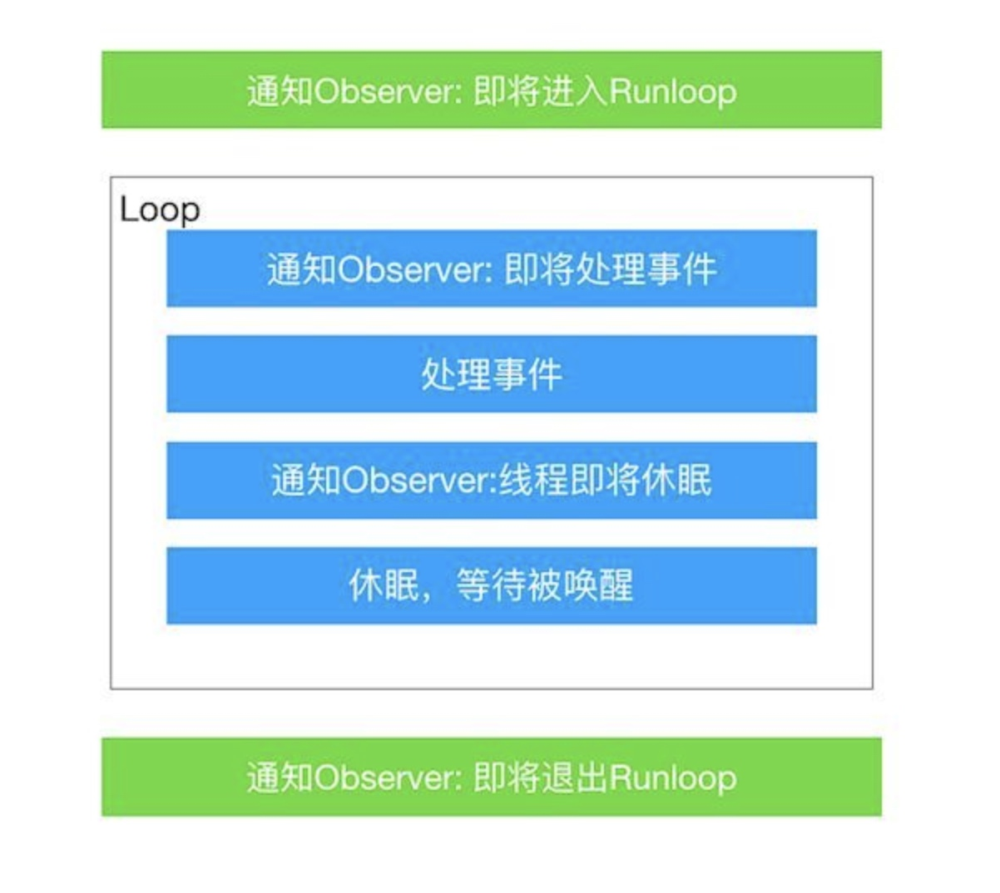
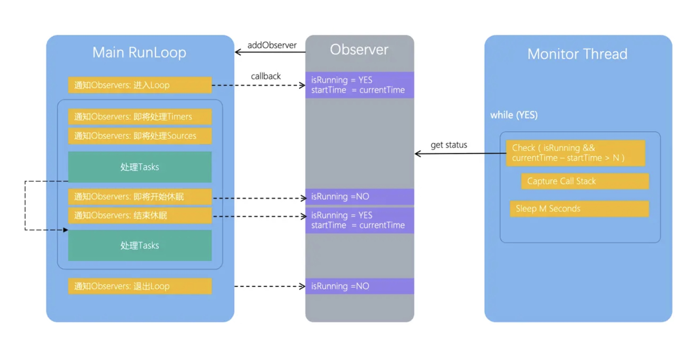
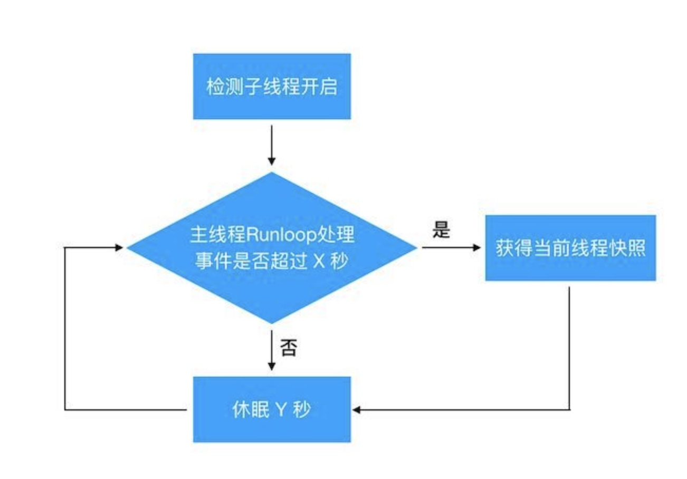

Runloop与线程
RunLoop笔记
runloop是用来管理 事件/消息，在线程没有处理消息时，休眠避免资源占用，有消息到来时立刻被唤醒
runloop实际上就是一个对象，这个对象管理了其要处理的事件和消息。并提供了一个入口函数来
- 主线程的RunLoop在应用启动的时候就会自动创建
- 其他线程则需要在该线程下自己启动
- 不能自己创建RunLoop
- RunLoop并不是线程安全的，所以需要避免在其他线程上调用当前线程的RunLoop
- RunLoop负责管理autorelease pools 负责处理消息事件，即输入源事件和计时器事件
子线程的runloop默认是不开启循环，比如子线程的的NSTimer会失效（可以手动开启RunLoop循环）
可以将timer加在子线程中并让runloop循环（但runloop一直在循环），可以自己写个循环来控制runloop的停止，主线程被杀死后，子线程还可以继续运行
runloop用于渲染UI，循环非常非常快
- kCFRunLoopEntry -- 进入runloop循环
- kCFRunLoopBeforeTimers -- 处理定时调用前回调
- kCFRunLoopBeforeSources -- 处理input sources的事件
- kCFRunLoopBeforeWaiting -- runloop睡眠前调用
- kCFRunLoopAfterWaiting -- runloop唤醒后调用
- kCFRunLoopExit -- 退出runloop
程序启动过程
从程序启动开始到view显示： start -> (加载framework，动态静态链接库，启动图片，Info.plist等) -> main函数 -> UIApplicationMain函数：
- 初始化UIApplication单例对象
- 初始化AppDelegate对象，并设为UIApplication对象的代理
- 检查Info.plist设置的xib文件是否有效，如果有则解冻Nib文件并设置outlets，创建显示key window、rootViewController、与rootViewController关联的根view（没有关联则看rootViewController同名的xib），否则launch之后由程序员手动加载。
- 建立一个主事件循环，其中包含UIApplication的Runloop来开始处理事件。
UIApplication：
- 通过window管理视图；
- 发送Runloop封装好的control消息给target；
- 处理URL，应用图标警告，联网状态，状态栏，远程事件等。
AppDelegate： 管理UIApplication生命周期和应用的五种状态(notRunning/inactive/active/background/suspend)。
Key Window：
- 显示view；
- 管理rootViewcontroller生命周期；
- 发送UIApplication传来的事件消息给view。
rootViewController：
- 管理view（view生命周期；view的数据源/代理；view与superView之间事件响应nextResponder的“备胎”）;
- 界面跳转与传值；
- 状态栏，屏幕旋转。
view：
- 通过作为CALayer的代理，管理layer的渲染（顺序大概是先更新约束，再layout再display）和动画（默认layer的属性可动画，view默认禁止，在UIView的block分类方法里才打开动画）。layer是RGBA纹理，通过和mask位图（含alpha属性）关联将合成后的layer纹理填充在像素点内，GPU每1/60秒将计算出的纹理display在像素点中。
- 布局子控件（屏幕旋转或者子视图布局变动时，view会重新布局）。
- 事件响应：event和guesture。控制器生命周期
如何将线程置于休眠状态，以避免空闲时浪费 CPU 资源
以避免浪费 CPU 资源，通常需要使用运行循环（RunLoop）或 GCD（Grand Central Dispatch）等机制。这样可以让线程在没有任务时进入休眠状态，当有任务需要处理时再唤醒线程。以下是一些常见的方法：
- 使用 RunLoop：
使用运行循环是在 iOS/macOS 开发中控制线程休眠和唤醒的一种常见方法。RunLoop允许线程在没有任务时进入休眠状态，当有任务需要处理时自动唤醒。
NSRunLoop *runLoop = [NSRunLoop currentRunLoop];
[runLoop runMode:NSDefaultRunLoopMode beforeDate:[NSDate distantFuture]];
- 使用 GCD 队列：
GCD 提供了异步任务的调度机制，你可以创建一个串行队列，将任务提交到队列中，然后使用 dispatch_async 或 dispatch_sync 函数来执行任务。当队列为空时，线程会休眠，直到有任务到达队列。
dispatch_queue_t myQueue = dispatch_queue_create("com.example.myqueue", NULL);
dispatch_async(myQueue, ^{
// 执行任务
});
runloop退出条件
- app退出；线程关闭；设置最大时间到期；modeItem为空；
- 同一时间一个runloop只能在一个mode，切换mode只能退出runloop，再重进指定mode（隔离modeItems使之互不干扰）；
- 一个item可以加到不同mode；一个mode被标记到commonModes里（这样runloop不用切换mode）
runloop如何优化
优化运行循环（RunLoop）的主要目标是减少资源消耗、提高性能和响应性。下面是一些可以优化RunLoop的方法：
避免空闲循环： 不要让RunLoop进入无限循环，尤其是在主线程上。空闲循环会浪费CPU资源。可以使用合适的运行模式，让RunLoop在没有任务时休眠。
合理使用运行模式： 理解RunLoop的运行模式，根据需要选择合适的模式。使用合适的模式可以确保只在需要的时候唤醒RunLoop。
限制Observer的使用： 观察者（Observer）是用于监听RunLoop事件的，但过多的观察者可能会导致性能下降。只使用必要的观察者，或者在不需要的时候暂时禁用观察者
处理输入源： 如果你的应用依赖于输入源（如点击、触摸、网络数据等），及时处理这些输入源以减少事件积压。
将任务移到后台线程： 长时间运行的任务应该在后台线程中执行，以免阻塞主线程的RunLoop。使用GCD或操作队列来管理后台任务。
避免UI更新： 避免在常驻RunLoop的线程上执行与UI更新相关的操作，这可能导致性能下降和界面不响应。UI更新应该在主线程中执行。
合理使用定时器： 使用定时器时要小心，不要创建过多的定时器。确保及时销毁不再需要的定时器。
使用RunLoop源代码优化工具： Xcode提供了工具来分析和优化RunLoop的性能。你可以使用"Instruments"来检测和解决性能问题。
避免长时间运行的同步任务： 避免在主线程上运行长时间运行的同步任务，这会导致RunLoop阻塞。如果需要同步任务，可以将其移到后台线程。
优化事件处理： 将事件处理逻辑尽量简化，减少不必要的计算和内存分配。确保事件处理尽可能快速完成。
runloop检测卡顿
卡顿的原因
卡顿通常是由于主线程长时间被阻塞，无法响应用户输入或渲染界面而导致的现象。卡顿的原理涉及到主线程的运行机制和事件处理，主要原因包括：
- 死锁：主线程拿到锁 A，需要获得锁 B，而同时某个子线程拿了锁 B，需要锁 A，这样相互等待就死锁了。
- 抢锁：主线程需要访问 DB，而此时某个子线程往 DB 插入大量数据。通常抢锁的体验是偶尔卡一阵子，过会就恢复了。
- 主线程大量 IO：主线程为了方便直接写入大量数据，会导致界面卡顿。
- 主线程大量计算：算法不合理，导致主线程某个函数占用大量 CPU。
- 大量的 UI 绘制：复杂的 UI、图文混排等，带来大量的 UI 绘制。
如何怎么定位问题
- 死锁一般会伴随 crash，可以通过 crash report 来分析。
- 抢锁不好办，将锁等待时间打出来用处不大，我们还需要知道是谁占了锁。
- 大量 IO 可以在函数开始结束打点，将占用时间打到日志中。
- 大量计算同理可以将耗时打到日志中。
- 大量 UI 绘制一般是必现，还好办；如果是偶现的话，想加日志点都没地方，因为是慢在系统函数里面。
如何判定卡顿
一般来说，用户感受得到的卡顿大概有三个特征：
- FPS 降低
- CPU 占用率很高
- 主线程 Runloop 执行了很久
如何确定卡顿参数
FPS 不好衡量，抖动比较大。而对于抢锁或大量 IO 的情况，光有 CPU 是不行的。我们用下面两个判断卡顿了
- CPU 占用超过了100%
- 主线程 Runloop 执行了超过2秒
监测卡顿
- 使用子线程定时向主线程中仍入空任务，超过指定时间任务未被执行则判定为卡顿。(缺点: 会不停的唤醒主线程runloop，有一定损耗)
- 基于runloop检测，使用子线程实时检测runloop状态，执行超过指定时间则判定为卡顿。(缺点: 捕获到的卡顿堆栈，不一定是最耗时的任务。不过最耗时任务有较大的概率被捕获到)

Runloop 的起始最开始和结束最末尾位置添加 Observer，获取主线程的开始和结束状态。卡顿监控起一个子线程定时检查主线程的状态，当主线程的状态运行超过一定阈值则认为主线程卡顿，从而标记为一个卡顿
开辟一个子线程定时检查主线程的状态，并记录下主线程在各个运行状态的时间点，当主线程的运行状态超过一定的时间阈值后，则认为主线程卡顿。记录这时的堆栈信息，并进行相应的处理。

降低检测带来的性能损耗
- 内存 dump：每1秒检查一次，如果检查到主线程卡顿，就将所有线程的函数调用堆栈 dump 到内存中。
- 文件 dump：如果内存 dump 的堆栈跟上次捕捉到的不一样，则 dump 到文件中；否则按照斐波那契数列将检查时间递增（1，1，2，3，5，8…）直到没有遇到卡顿或卡顿堆栈不一样。这样能够避免同一个卡顿写入多个文件的情况，也能避免检测线程围着同一个卡顿空转的情况。